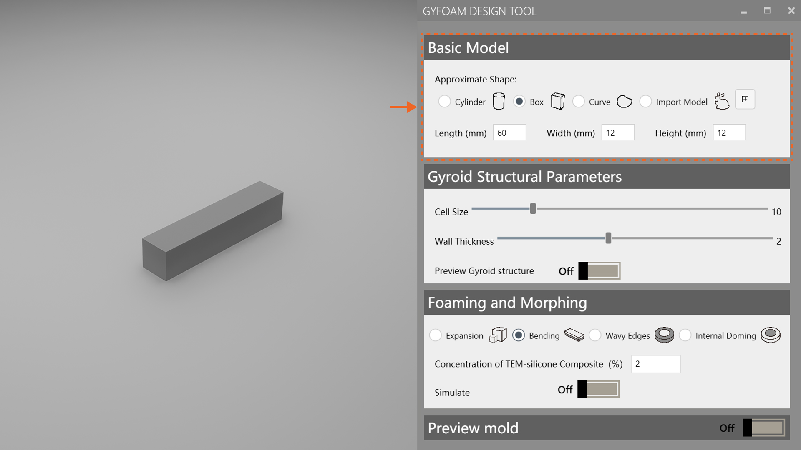
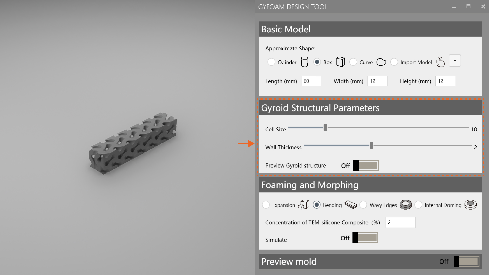
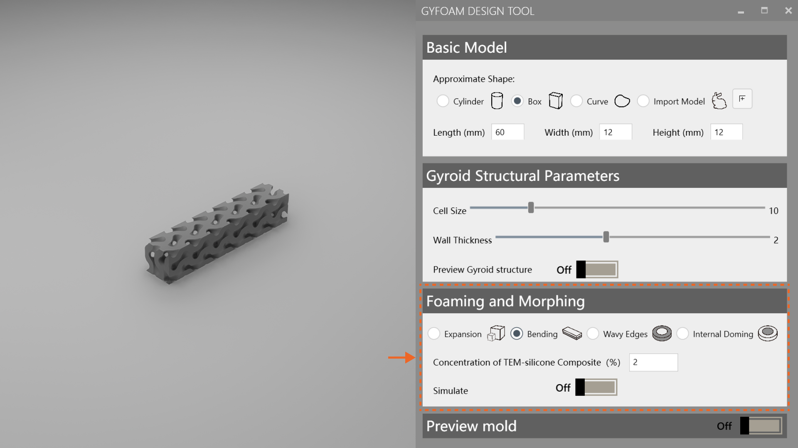
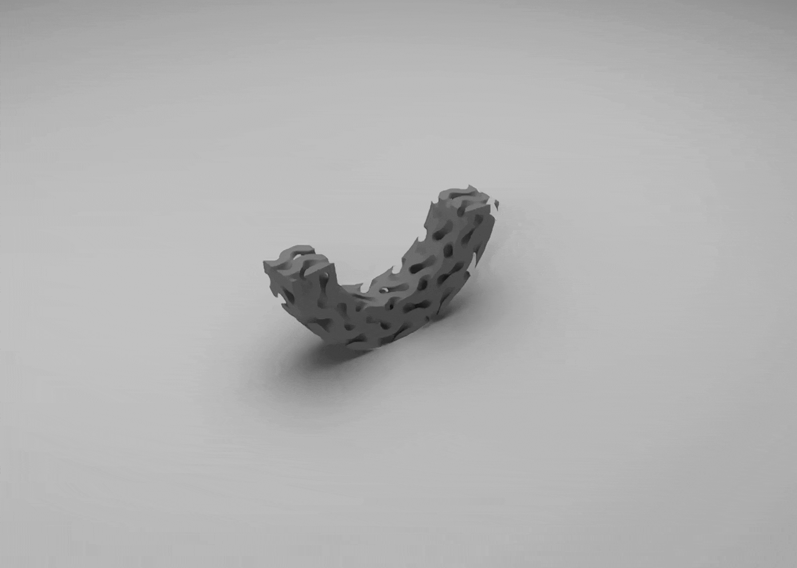
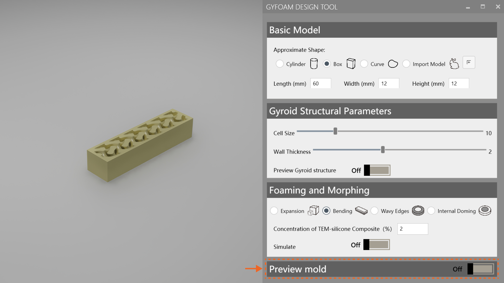
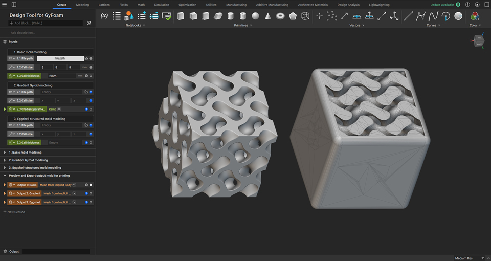
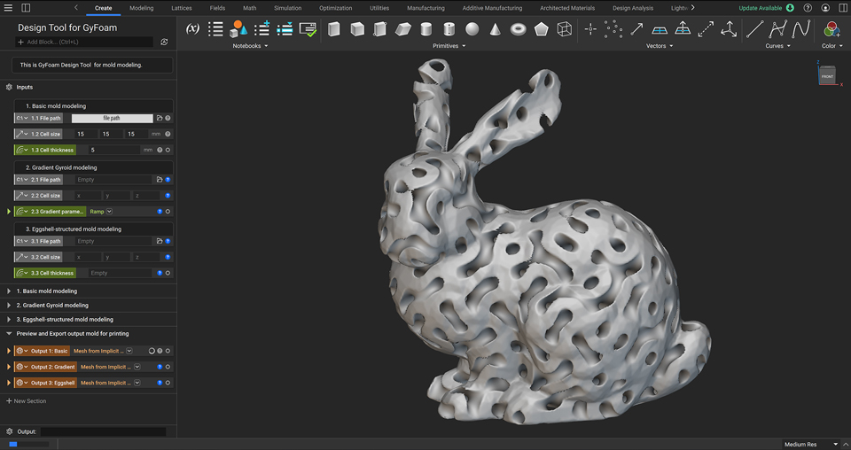
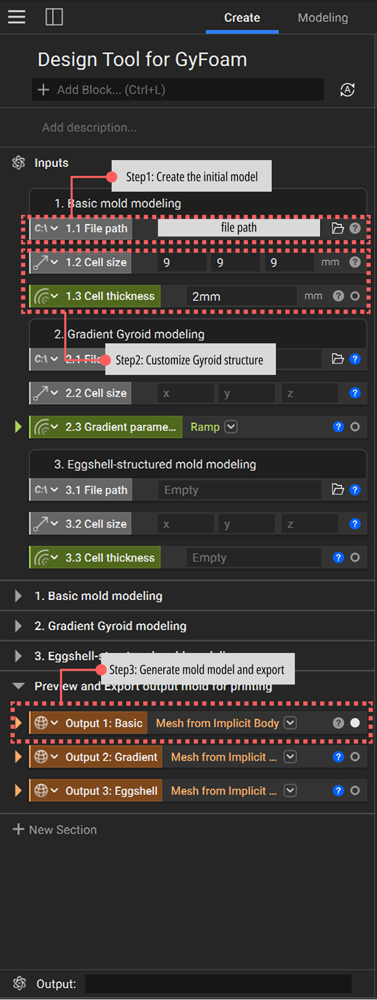
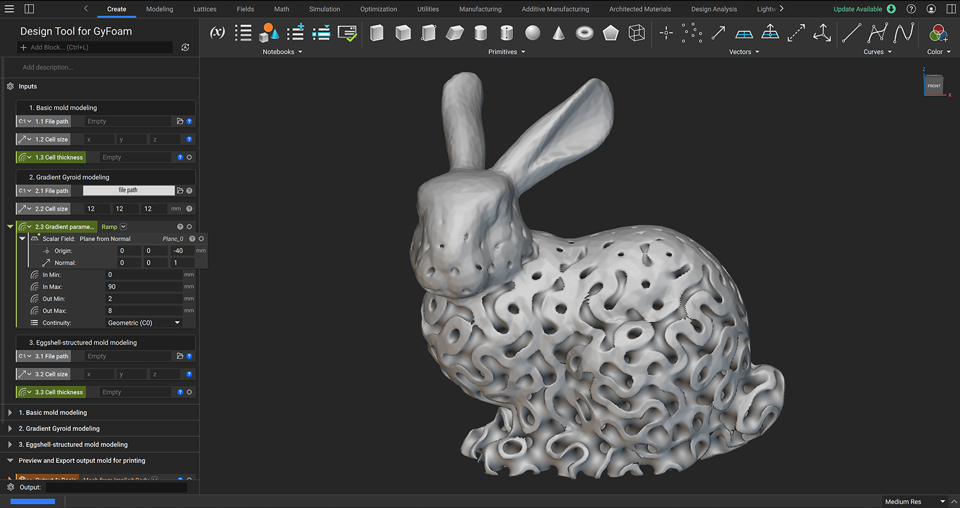
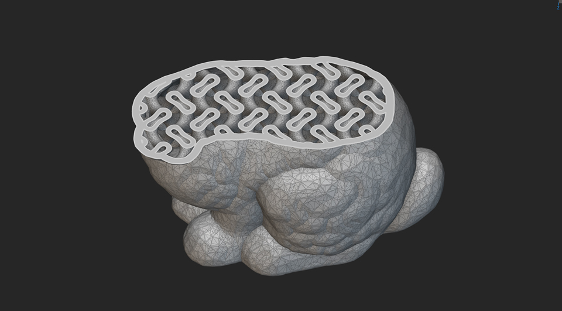

DesignTool Demonstration
To accommodate users' personalized and diverse needs, we have developed design tools deployed across two software platforms. For novice users, we established a tool based on Rhino and Grasshopper for modeling simple geometries and previewing deformation effects by adjusting geometric parameters. For more advanced users and requirements, we developed a modeling assistant based on nTop, which enables more complex structural designs and facilitates optimized mold generation.
Key parameters of the Gyroid structure — Cell Size and Wall Thickness — should satisfy the following Inequality:
The Rhino and Grasshopper-based design tool is primarily aimed at beginners and rapid prototyping. It uses HumanUI as the user interface, providing an intuitive parameter control panel that allows users to easily adjust geometric parameters and preview basic deformations. This tool is especially suitable for creating simple geometric shapes and basic Gyroid structure, without the need for an in-depth understanding of complex parametric modeling techniques.
Users can begin by choosing from our predefined base models as the bounding box for Gyroid structure. Experienced 3D modeling users with specific designs can also freely import their own closed polygonal objects, such as STL files.

To design suitable Gyroid structures and achieve desired deformation, users can adjust the global parameters of Gyroid structure, including cell size and wall thickness.

Users can achieve different deformation effects by adjusting material concentration and preview the results. After changing the concentration, users must click the simulation button again to refresh the deformation preview.


Finally, users can preview and export the mold model files for creating the Gyroid structure.

nTop is a software tailored for lattice structure modeling. We've developed useful templates to support users. While its workflow is similar to Rhino and Grasshopper, nTop offers faster computation and greater efficiency for complex structures. We also created two advanced techniques with nTop: Gradient Gyroid Modeling and Eggshell Mold Generation. Mold models can be exported directly for 3D printing.
Step 1: Create the initial model
Users can create simple geometries in nTop or import their own model files.
Step 2: Customize Gyroid structure
Users can generate different Gyroid structures parametrically and preview them in real time.
Step 3: Generate mold model and export
Based on the generated lattice structures, users can perform Boolean operations to create corresponding mold files and export them for 3D printing.



Research in mechanical engineering has shown that lattice structures with gradient variations exhibit enhanced mechanical properties. We implemented the design and modeling of such gradient Gyroid structures in nTop and provided a sample file to help users better understand the process and support their own modeling efforts.

To reduce PVA material usage, we optimized the mold design using an eggshell-inspired method. This approach creates thin-walled molds instead of solid ones, cutting down material consumption. The thin PVA shell also increases water contact area, speeding up dissolution. Users can refer to the sample file to assess whether this method suits their needs. We recommend it especially for larger models.

1. Will there be any design templates or sample cases provided?
Of course! We're happy to share our design cases and have prepared a set of template files to help beginner users quickly get started with modeling and create their own GyFoam pieces. All files will be gradually open-sourced on GitHub.
2. Can all deformation effects be previewed using our Rhino designtool?
Sorry, users can only preview basic deformation effects based on simple geometric shapes using our Rhino plugin. For more complex and customized deformations, professional simulation software such as Ansys or COMSOL is recommended. We are also actively exploring ways to integrate these simulation tools to enable more advanced deformation previews.
3. When should users use the Eggshell method to create mold models?
The eggshell method is an excellent approach for mold modeling. It is particularly suitable when there are specific size requirements and the mold needs to have a defined wall thickness. If the thickness doesn't meet the requirements, the system will generate a fully solid mold instead. Therefore, we strongly recommend using the eggshell modeling method, as it can significantly speed up the subsequent fabrication process.